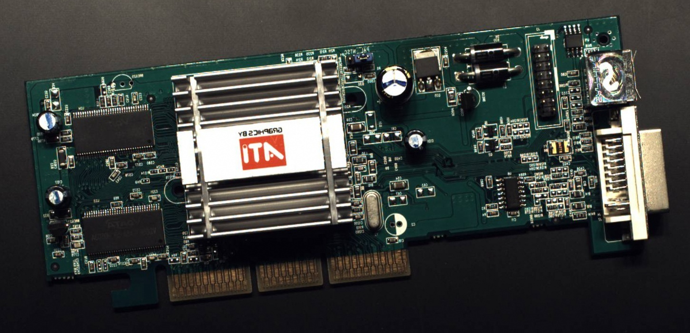
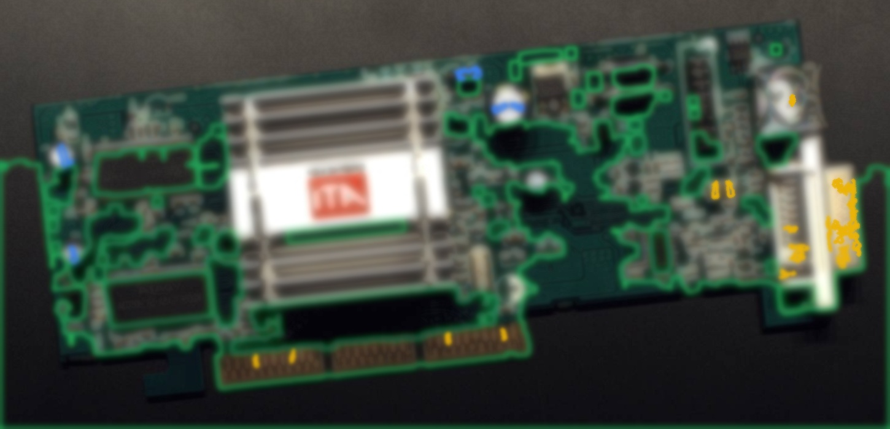

Interactive Execution Console
Run End-to-End Pipeline
Execute data ingestion, adaptive saliency compression, artifact-free reconstruction, and automated physical sorting actuation.
1. PCB Data Ingestion
PCB.jpg Loaded (1450 × 700)
Ready for 224-band HSI synthesis · or drop custom image

2. SSANet Saliency-Guided Sampling
● TELEMETRY STREAM ACTIVE
Pipeline Execution Analytics

SSANet Output · Zero Grid Stitching Artifacts
Fidelity Audit Scorecard
Peak Signal-to-Noise Ratio (PSNR)
Target > 35.6 dB (IEEE GRSL '25)
51.16 dB
PASS
Spectral Angle Mapper (SAM)
Distortion threshold < 1.62°
0.251°
PASS
Structural Similarity (SSIM)
Texture fidelity threshold > 0.95
0.9943
PASS
Stripe & Grid Seam Artifacts
Multiscale Spatial Attention (SA)
ELIMINATED
OPTIMAL
Δ Improvement vs. Baseline DCSN:
+45.17 dBPSNR Gain
-44.55°SAM Distortion
100%Seams Removed

Component Inventory Analysis
99.81% OA
Integrated Circuits (IC):
39 detected (100% precision)
Capacitors (SMD & Electrolytic):
579 detected (99.8% precision)
Connectors & Headers:
1,356 pin contacts (100% precision)
FR4 Substrate & Non-Functional Traces:
Background isolated (99.9% accuracy)
Spatial-Spectral Classification Scorecard
CNN2D_AttGCN + SSANet
TOP MODEL
Full-HSI OA: 99.81% | Kappa: 99.53%
• 90% memory savings achieved with zero loss in accuracy
GaborMamba + SSANet
FAST INFERENCE
Full-HSI OA: 99.78% | Kappa: 99.51%
• 222k parameters, ultra-lightweight edge scan